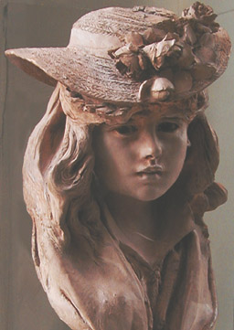
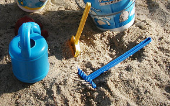

De même,
l'exposé sur les
techniques d'évidement des pièces - à
lire dans l'article L'argile
(modelage, moulage) - ne prétend en rien se substituer à
l'enseignement de professeurs non virtuels.
Les
enseignants, les ouvrages pédagogiques, mais aussi les notices des
fournisseurs sont irremplaçables.

Granulation et autres facteurs
déterminant la plasticité
Lire
en premier lieu l'article du glossaire consacré à la
plasticité de préférence
Sur le plan physique, comme on
l'a vu dans l'article du glossaire
consacré à l'argile, un certain nombre de facteurs déterminent les possibilités plastiques inégalées que
cette matière offre à l'être humain.
La combinaison de ces facteurs est le résultat
d'une alchimie géologique d'une durée parfois inimaginable. Lire l'article consacré
aux roches métamorphiques. Les argiles relativement fines sont surtout
utilisées pour le travail de poterie au tour, mais même les variétés
grossières au toucher (sans parler des terres chamottées),
servant notamment à la fabrication de briques et de tuiles, comportent en fait
un énorme quantité de cristaux microscopiques, de taille inférieure au micron.
Les
termes "argile fine" ou "argile grossière" sont donc assez
subjectifs. C'est une question d'échelle et de sensation.
Pratiquement tous
les types d'argiles ont des variétés dites fines et des variétés dites
grossières. Ces appellations ont un lien direct avec l'impression ressentie au
toucher et pas nécessairement avec la plasticité de la terre.
Composition,
genèse
La composition de
l'argile est si variable
qu'elle peut déterminer l'emploi que l'on souhaite en faire. Deux molécules
prédominent cependant : la silice (de 45 à 60%) et l'alumine
(de 20 à 40%), particulièrement présente dans le kaolin
et les argiles blanches en général. Il faut mentionner ensuite le fer (Fe2O3
: 5 à 6% dans l'argile rouge, 0,5% environ dans les variétés blanches), le
calcium (CaO, jusqu'à 5% dans les variétés rouges) et d'autres éléments assez communs.
L'argile
blanche contient généralement moins d'éléments. En fait, nous ne dirons pas
que l'argile rouge est plus impure (qui définira ce qu'est l'impureté ?) mais
seulement qu'elle est soit plus jeune, soit au contraire beaucoup plus ancienne. Des éléments solubles,
les métaux alcalins principalement - notamment sous forme de calcite
-, sont davantage présents dans l'argile blanche (comme dans la plupart des gisements de faïence,
souvent rendus inutilisables par ces matériaux), prouvant soit que l'épreuve de l'eau ne
leur a été imposée que partiellement, soit qu'elles ont été longuement
charriées dans des régions où elles ont amassé d'autres substances.
Pour
éclairer ce point de vue, il faut distinguer deux catégories d'argiles, comme
le fait Daniel Rhodes.
Les argiles primaires sont
le résidu de la décomposition par l'eau (et éventuellement le gaz) des roches
feldspathiques sans qu'aucun transport ait eu lieu. Il s'agit principalement de
kaolins au grain grossier (n'ayant pas été broyés sous l'action de l'eau des
rivières et des océans) piégés par le relief en des régions bien
circonscrites. Ce cas de figure est rare et tous les kaolins ne sont pas des
argiles primaires.
Les argiles
secondaires, très courantes, ont été éloignées
de leur "roche mère" par l'eau, les glaciers ou même le vent. Dans
le premier cas, la sédimentation donne lieu à des grains homogènes,
regroupés par strates. Les glaciers donnent des gisements beaucoup plus variés
sur le plan de la taille des particules. Sur les argiles secondaires formées
par le vent, nous ne disposons pas d'informations précises.
Des composants organiques,
présents dans les estuaires où se fabriquent le plus souvent les argiles,
peuvent jouer un rôle non négligeable au moment de la cuisson. Notons en
passant que le carbone et le soufre sont les premiers éléments qui
s'évaporent (voir ci-dessous).
Des
bactéries peuvent aussi s'implanter dans l'argile au moment-même ou nous la
travaillons. Un apport modéré de bactéries, survenant après quelques jours
d'exposition atmosphérique, est même souhaitable selon certains (d'autres
évoquent des décennies d'exposition).
Il existe une "argile
théorique", sorte de description chimique de la base de cette famille de
terres. Elle correspond à la kaolinite.
Le
retrait, les retraits
A cause de la
préparation de l'argile par adjonction d'eau, celle-ci connaît un retrait au
séchage, puis à la cuisson. Il faut dire qu'une argile préparée pour la
sculpture, la poterie, etc., est constituée d'un quart à un tiers d'eau
"libre" en termes de poids (l'eau "libre" est l'eau qui
n'est pas intimement associée à l'argile à l'échelle moléculaire). L'élimination
de cette eau libre au séchage entraîne une première perte de masse
de l'ordre de 3
à 8%, les argiles les plus fines et les plus "pures", se rapprochant
de la kaolinite, perdant toujours plus d'eau. Les autres, nommées "argiles
ouvertes", contiennent suffisamment de corps imperméables (quartz,
sable, feldspath, etc.) ouvrant des "canaux" permettant une bonne évacuation
de l'eau. Après cuisson, les terres "ouvertes" s'avèrent souvent
plus résistantes aux chocs thermiques.
L'eau
libre demeure donc présente en quantité importante dans l'argile (eau dite
"hygrométrique"). Elle est éliminée au début de la cuisson.
Lorsque le retrait s'effectue mal
au séchage, on constate déformations, fendillements et autres
accidents. Le séchage doit être lent, en
atmosphère très modérément humide, et bien homogène (lire Le
séchage in L'argile
(modelage, moulage)). Il est également possible
d'ajouter de petites quantités de sable (ou d'un autre matériau imperméable
cité ci-dessus)
afin d'améliorer l'écoulement d'eau. La plasticité
de la terre en souffrira cependant. De trop grandes quantités risquent de
compromettre l'adhérence aux éventuelles structures de support et même,
finalement, de nuire à l'homogénéité du séchage. En effet, trop chargée,
la terre a tendance à s'imbiber de la moindre humidité ambiante.

Rappelons-nous à quel point, lorsque nous faisions des châteaux de sable, la
plage semblait imbibée d'eau jusqu'à des profondeurs insondables, longtemps
après la marée haute. Il n'y a pas plus
"ouvert" que les matériaux imperméables et cette ouverture peut
être franchie dans les deux sens : le flux et le reflux.
Les terres chamottées ne
posent pas ces problèmes (lire l'article
du glossaire). On remarque que la chamotte n'est employée qu'avec les
argiles rouges qui sont très "plastiques",
voire collantes. La diminution de la plasticité par l'adjonction d'éléments
imperméables est dans ce cas plutôt souhaitable.
L'excellent
comportement des terres chamottées au séchage et à la cuisson autorise la
création aisée de pièces plus grandes qu'avec d'autres terres.
Un retrait se produit également lorsque l'on pousse la
cuisson jusqu'à la vitrification. Voir ci-dessous.
Les
phases de la cuisson
La
cuisson est un processus réellement complexe. Elle peut facilement durer une
vingtaine d'heures en comptant le temps de refroidissement, égal au temps de
réchauffement.
Nous
ne saurions trop conseiller le recours à des professionnels, au moins dans un
premier temps : enseignants, artisans et sculpteurs peuvent éviter un grand
nombre d'erreurs et d'accidents.
A la cuisson, la perte
d'eau "hygrométrique" est
considérable, mais s'effectuant par évaporation et non par capillarité, elle ne
pose pas les mêmes problèmes qu'au séchage. Un savoir-faire et surtout une connaissance expérimentale de la terre
utilisée - donc des tests - sont nécessaires. Chaque terre est un cas particulier.
Les
accidents les plus courants - du moins en ce qui concerne les conséquences de
la perte d'eau - sont liés à l'accumulation interne trop soudaine de vapeur
dans les premiers temps de la cuisson. La quantité d'eau restante, après le
séchage, est en effet de l'ordre de 20 à 30% de la masse des pièces. Les risques
d'éclatement sont d'autant plus important que les épaisseurs sont
conséquentes. C'est la raison pour laquelle un évidement préalable est très
souvent nécessaire (voir plus loin, Contraintes
préalables à la cuisson et Évidement
in L'argile (modelage, moulage)).
A partir de 100°C, une
sorte de plateau ou de progression lente doit être respectée de sorte à
laisser à la vapeur le temps de s'échapper. Une élévation trop rapide de la
température provoque une accumulation de vapeur qui, malgré les
"cheminées" aménagées lors de l'évidement, peut provoquer des
explosions.
De 350 à 500°C, l'eau contenue dans les
associations macromoléculaires de l'argile (voir
kaolinite)
s'évapore à son tour. Elle représente une masse de 14% qui doit être, elle
aussi, libérée très progressivement non à cause d'un risque de retrait, mais
d'éclatement.
A partir de 500°C, l'aération du
four devient essentielle. En effet, tous les éléments doivent impérativement
s'oxyder pour supporter ces températures.
A 573°C, c'est le quartz qui s'altère, provoquant
parfois des incidents. Lire l'article du glossaire
consacré au quartz.
En deçà de 900°C, se produit progressivement
l'élimination du carbone, du soufre, du calcium et d'autres éléments. Là
aussi, la lenteur du réchauffement permet de diminuer le risque d'accidents
divers - même si à partir de 600°C une hausse un peu plus rapide de la
température devient moins risquée.
La présence d'air et son renouvellement permanent
constituent des facteurs peut-être plus déterminants. Comme nous l'avons dit,
cette étape est celle de l'oxydation d'éléments et de l'élimination de ceux
qui ne s'oxydent pas.
Elle est emblématique des
arts du feu car la calcination qui est mise en oeuvre présente des points
communs avec le développement de n'importe quel incendie ou feu de cheminée à
cause de l'importance essentielle de la présence permanente d'oxygène. Le
carbone, notamment, a besoin de cet élément, produisant des associations
moléculaires célèbres, le dioxyde et le monoxyde de carbone qui posent
tant de problèmes à nos civilisations.
Le but de cette cuisson qui peut
sembler un peu alchimique est l'élimination des éléments produisant des
effets chromatiques indésirables. Ce feu-là peut d'une certaine manière être
dit purificateur (des mots "poids lourd"), mais gardons-nous de toute
exagération : il s'agit
simplement, dans les faits concrets, d'une transformation de la matière et d'une
sorte de filtrage.
La
vitrification
L'aspect final de
l'objet cuit dépend du réchauffement qui lui a été infligé au-delà de
900°C. Le processus qui s'opère alors, la vitrification, peut être plus ou
moins mené à terme, laissant une résultat poreux ou totalement imperméable.
Il occasionne un nouveau retrait.
La
vitrification correspond au passage à l'état liquide lors de la cuisson, puis
à l'état vitreux au refroidissement (l'état vitreux n'étant qu'un autre état
liquide - lire passage in Les
dialogues de Dotapea). Des cristaux de mullite
se forment lors de ces processus, tissant un réseau solidifiant à l'intérieur
de la masse vitreuse. L'argile vitrifiée ne produit pas exactement un simple
verre amorphe.
En fait, une partie de l'argile se liquéfie en premier lieu et
"dissout" le reste
de la matière. A terme, c'est toute la terre qui peut se liquéfier et devenir
vitreuse. La cuisson la plus proche de ce résultat extrême serait,
dit-on, celle de la porcelaine. Elle est d'une
grande complexité. La liquéfaction pose en effet un gros problème : la
déformation.
Les terres
rouges contiennent une importante quantité d'oxydes métalliques,
particulièrement l'oxyde ferreux. Ce genre de
composés a tendance a favoriser la vitrification en se liquéfiant avant les
autres composés qu'il "dilue". Aussi ce type de terre a-t-il une température de fusion
de 1250°C (± 30°C environ) alors qu'une terre blanche pure ne se liquéfie qu'aux
alentours de 1800°C.
La vitrification doit être maîtrisée en
fonction de la composition du matériau : des gaz peuvent se libérer, faire des
bulles et autres accidents. De plus, le passage à l'état liquide, puis à un
état solide nouveau, modifie le volume de la matière, tandis que la masse
diminue sous l'effet de la perte de matière gazeuse. Le retrait peut être
important, mais il varie en fonction du type de terre et de cuisson.
Contraintes
prépalables à la cuisson
Evidement
Un
problème se pose avec les sculptures, plus rarement en poterie : les fortes
épaisseurs de terre sont susceptibles de piéger de l'eau ou de l'air,
provoquant l'éclatement lors de la cuisson.
Aussi est-il très
courant d'évider les pièces et de créer des sortes conduites d'évacuation
pour les gaz. Pour cela, couramment, la pièce est découpée, évidée puis
recollée à l'aide d'une barbotine.
Une
description plus précise peut être lue dans l'article L'argile
(modelage, moulage). Mais ne souhaitons pas que ces pages fassent figure de
pâle substitut d'un véritable enseignement de ce type de techniques. Nous
conseillons vivement à nos visiteur de recourir à des professeurs non virtuels
pour ce type d'apprentissages.
Adjonction
initiale de terres et de produits
Les besoins en termes de température de cuisson, de retrait, de couleur et de
plasticité rendent souvent nécessaire l'adjonction de terres et autres
produits dès le début du travail.
Concernant la
température de cuisson,
il est courant que l'on cherche à l'abaisser. On utilise alors ce que l'on
nomme des "fondants" comme le talc, l'oxyde
de fer, les frittes, etc. (voir notamment oxydes
non pigmentaires)
Lorsque l'on souhaite élever la
température de cuisson, on utilise le kaolin, la
chamotte, les silices, l'alumine,
l'oxyde de calcium, les ball clays
et, bien sûr, les terres à feu.
Une terre trop
visqueuse peut
nécessiter l'adjonction de kaolin, de silices,
de chamotte, de terres
à feu ou de tout autre terre peu "plastique".
Ce type d'adjonctions réduit également le retrait (il s'agit de produits à
grain grossier facilitant l'évacuation d'eau).
Dans le cas d'une terre manquant de
viscosité, les additifs habituels sont les ball clays
et la bentonite.
Les propriétés d'un terre dans le
domaine du retrait peuvent être modifiées par les produits mentionnés
dans le paragraphe consacré au retrait,
ci-dessus.
Comme indiqué ci-dessous, la couleur
d'une terre peut également être changée. Cette opération doit être
réalisée dès le début du travail.
Entassement
de pièces dans le four
Il n'est pas rare de cuire plusieurs pièces en une seule opération.
Certains fours sont même conçus dans cette optique.
Dans le cas contraire, il est essentiel de respecter une libre circulation de
l'air et d'éviter un contact entre les pièces pouvant provoquer des fusions
intempestives.
Les pièces à cuire doivent parfois être isolées du fond (c'est le cas
lors de la cuisson des glaçures). Certaines pièces pointues, les pernettes,
permettent d'éviter ce contact.
Aspects
connexes
En vrac
Couleurs.
Les argiles sont
naturellement blanches, roses, rouges, brunes, noires, jaunes, parfois
verdâtres, mais elles peuvent être teintées dans la masse
avec des pigments pouvant supporter la cuisson (voir oxydes,
engobe). Ces matières pigmentaires peuvent modifier
le comportement des terres tant au séchage qu'à la cuisson.
L'argile,
support à peindre. L'argile
non vitrifiée - dite "ouverte", c'est-à-dire poreuse - est un excellent support pour la
peinture (acrylique, patines, etc.). Certains auteurs ajoutent que même le
crayon graphite, la sanguine et d'autres procédés de dessin sont parfaitement
utilisables sur ces supports. Nous préciserons seulement que seul un faible
degré de vitrification autorise l'emploi de ces techniques et que les
contraintes de fixation ou de
vernissage demeurent valables comme sur
n'importe quel support.
Durcir
sans cuisson. Mentionnons
encore l'existence
d'argiles durcissant sans cuisson, parfois colorées dans la masse. Leur prix
est élevé mais elles peuvent s'avérer utiles dans certains cas. Certaines
peuvent être manipulées par des enfants. En général, il est possible de les
peindre avec une peinture acrylique. Nous ignorons tout de leur composition
chimique.
L'adobe.
Enfin,
une argile peut parfaitement être moulée en brique et séchée au soleil, un usage
antique.
L'objet obtenu (adobe, mot espagnol) est cependant nettement moins résistant qu'une
terre cuite au four.
voir
absolument ci-dessous paragraphe adobe
Argiles
à briques et arts plastiques
La plupart des argiles
à gros grain contenant du sable (donc peu "plastiques")
peuvent être utilisées certes pour la fabrication de briques, mais aussi,
généralement en mélange, pour faciliter la fabrication de pièces artistiques
de grande
taille. Il nous a semblé aussi que leurs "matières" rugueuses et
rustiques pouvaient intéresser les artistes, d'autant plus que leur manque de
plasticité peut être compensé par un moulage, comme dans le cas de l'adobe.
Types
d'argiles
La
faïence
Cette section
traite de "la terre faïence". La technique de la faïence est
abordée dans le glossaire. Cliquer ici.
C'est l'argile la plus courante. La faïence a servi à
réaliser la grande majorité des terres cuites ou séchées sur notre planète.
Elle
est plastique. Parfois trop, surtout la
variété rouge. Il faut alors la marier à une autre terre.
Les minerais rouges
sont extrêmement courants sur terre mais beaucoup sont inutilisables à cause
de la présence en eux de métaux alcalins (voir
ci-dessus, Composition, genèse). Cependant, la réserve de terre
utilisable est immense.
Il existe également des
variétés blanches, grises, etc., mais aussi des argiles chamottées
(en principe artificiellement)
d'usage courant en arts plastiques notamment. En fait, la faïence rouge
convient autant à la sculpture qu'à la poterie. La faïence rouge la plus
banale, cuite à 1250°C environ, produit un verre brunâtre
propice à l'émaillage. Cette opération fut réalisée
pour la première fois en Chine, où les plus
hautes températures furent atteintes en premier. Voir vitrification.
La
température de cuisson (et non de fusion intégrale)
des faïences disponibles un peu partout dans le commerce est souvent de 1050°C
(plus généralement de 850 à 1100°C). Elles contiennent tout au plus 2/3 de silice, les autres
composants jouant le rôle de fondants.
Beaucoup de faïences peuvent être
employées pures.
Le
kaolin
Au-delà de ce qui a déjà été spécifié dans le
glossaire (à
lire en premier lieu de préférence. Cliquer ici) et ci-dessus, ajoutons que
le véritable kaolin chinois est réputé plus aisé à travailler, plus plastique
que les autres variétés (ce qui pourrait expliquer que certains auteurs ne connaissant
que celles-ci évoquent le kaolin comme peu plastique), très adapté aux travaux de poterie et cuisant bien
blanc - comme le kaolin anglais, dit-on. Les kaolins, dans l'ensemble, ont un grain
relativement grossier par rapport à d'autres terres à modeler (et non par
rapport aux terres à briques).
Les kaolins primaires
seraient nettement plus plastiques et plus blancs après cuisson que les kaolins secondaires.
Rappelons
que la température de fusion du kaolin est
particulièrement élevée : en principe 1800°C environ, au mieux 1500°C. Pour abaisser cette température
et, lorsque l'on est en présence de certaines variétés, pour disposer d'une meilleure plasticité, il est
courant de lui associer des terres à grain plus fin, notamment les ball
clays, mais aussi, lorsque la plasticité est indifférente, à ce que l'on
nomme "les silices".
Il est courant que
le kaolin représente à peine la moitié du mélange. Un exemple type de
mixture utilisée en poterie met en oeuvre 40% de kaolin, 10% de ball
clays, 20% de silices et 30% de feldspath
(chiffres Daniel Rhodes, proportions
confirmées par ailleurs). Ces
données ne sont fournies qu'à titre indicatif, la variété de kaolin et le
type de l'objet à réaliser pouvant rendre nécessaire un ajustement important.
Le kaolin,
grâce à son grain relativement grossier qui autorise un écoulement
satisfaisant de l'eau, pose peu de problèmes de retrait.
Les
terres glaises
Lire
d'abord de préférence l'article Glaise du glossaire
Argiles
sédimentaires très impures, elles sont aussi les plus colorées. Elles
regorgent de molécules variées, principalement des marnes,
des hydrocarbures et des oxydes de fer. Pour cette raison, elles sont très
fusibles et très plastiques.
Les
ball clays
Ce sont des terres très plastiques,
chargées de carbone car leurs gisements sont souvent situés entre des strates
de charbon. Leur grain est très fin. Elles contiennent aussi plus de silice
qu'une argile moyenne.
Elles ne peuvent être employées pures
à cause d'un retrait excessif. Par contre, associées à des kaolins ou
d'autres terres en quantités faibles (1/10ème environ), elles
apportent un gain de plasticité.
Leur couleur naturelle est grise (rarement
blanche) et rosâtre, à cause de la présence d'oxyde de fer (sauf exceptions).
Elles cuisent clair.
Le
grès, les terres à grès
Lire
d'abord de préférence l'article du
glossaire.
Les grès n'ont pas une définition très
précise quant à la composition, la température de cuisson et même la couleur. Cependant, on peut dire que l'emploi de ces terres correspond souvent à la
recherche de coloris subtils.
En principe, elles se vitrifient à une température
assez élevée (vers 1200-1400°C), exigeant des fours puissants dits
"fours à grès", mais une cuisson normale ne nécessite pas
forcément de si hautes températures.
Elles ont, comme la plupart des terres
rouges, une bonne plasticité.
Ces argiles de type secondaire sont assez
courantes et sont quelquefois employées pures, de manière artisanale. Un haut
niveau de connaissance des matériaux est cependant souhaitable. Pour qui
souhaite établir des formules, un ouvrage semble particulièrement conseillé,
"Le Montmollin".
Cas
particuliers
Les
terres à feu ou argiles réfractaires
Ce ne sont pas des argiles précises. En
principe, toute
argile est dite "terre à feu" si sa température de fusion (matériau
pur) est supérieure à
1500°, quelle que soit sa composition.
L'utilisation la plus célèbre des terres à feu est la fabrication de
briques réfractaires. L'emploi de ces briques est très varié : de
l'assemblage de fours à la protection externe d'engins spatiaux.
Ces
argiles dénuées de fer mais rarement blanches, à grain souvent grossier, ont
un autre intérêt particulier : leur usage additionnel autorise la réalisation de
travaux de grande taille. Le grain grossier combiné à un grain plus fin est en
effet un gage de solidité (principe du béton et de la terre chamottée).
Les
terres à casettes
Lire l'article du
glossaire consacré aux casettes et terres à casettes.
La
terra cota
L'étymologie très vague de ce mot (terre cuite)
est à l'opposé de ce qu'il signifie de nos jours - bien que le sens premier
semble persister chez certains auteurs - : la terra cota est une
argile bien précise.
Elle est très chargée en fer, donc cuit à basse
température.
Son grain est grossier, ce qui autorise un séchage d'excellente
qualité (écoulement rapide et homogène de l'eau entre les grains).
Elle semble
à
conseiller pour les travaux de grande taille mais nous manquons
d'informations concernant sa plasticité.
Lire aussi l'article du glossaire.
L'adobe
Le
terme adobe (de genre masculin) désigne un type particulier de briques, mais
aussi, par extension, la terre servant à le fabriquer et le mode de
fabrication, connu déjà dans l'ancienne Égypte, dans le royaume de Kerma et
en Assyrie notamment. Fabrication de l'adobe : voir ci-dessus.
L'adobe
en tant qu'argile est une terre grossière et sableuse récoltée en surface.
Elle
a peu de plasticité. Son emploi semble
réservé aux régions arides où sa conservation n'est pas millénaire, comme en
témoignent notamment les "tells" d'Irak, collines informes faites de
vestiges de bâtiments construits avec ces briques, effritées et affaissées. A
l'inverse, les briques cuites de Mohenjo-Daro (civilisation de l'Indus,
3 500-1 500 BC) ont remarquablement résisté jusqu'à nos jours.
L'adobe a cependant rendu de très grands services à l'humanité et peut encore
en rendre dans différentes régions du monde.
Nous la mentionnons pour
plusieurs raisons :
* son ancienneté, les preuves qu'elle a données
sont notables
* les références historiques qu'elle
évoque peuvent
être mises en scène dans un travail artistique
* sa facilité
d'emploi, de fabrication et d'extraction est unique.
Une variante est la
bauge (ou le torchis, ou le pisé), enrichie de foin et pas forcément
préparée sous la forme de briques.
Le
schiste
Lire
en premier de préférence l'article du glossaire
Cette argile
stratifiée ne peut être utilisée pour les arts du feu sinon après réduction
en poudre fine.
Très peu "plastique",
elle est surtout utilisée dans la fabrication de briques.
Cependant, la
variété des schistes et les expérimentations possibles nous ont semblé
justifier leur mention sur cette page.
La bentonite
De
Fort Benton, ville des États-Unis située
sur le Missouri près des Highwoods mounts.
C'est une argile naturellement gavée de matières
collantes. Son origine est volcanique.
Elle est utilisée en très petite
quantité pour accroître la plasticité
d'autres terres et pour aucun autre usage car :
* en présence d'eau,
son volume augmente considérablement
* elle connaît un très fort
retrait au séchage
* elle colle fortement, pour
ne pas dire trop.
L'argile
(modelage, moulage)
Lire
l'article consacré spécifiquement à l'utilisation de l'argile en modelage et
moulage.
Les
émaux
Lire
l'article consacré spécifiquement aux émaux.
Les
oxydes
Lire l'article spécifique sur ces
colorants et adjuvants divers.
_____
* Cf. Jean Guilaine. Réf. :
cliquer
ici.
**
Le Japon
semble un cas exceptionnel, ce dont attestent les extraordinaires poteries JOMON du
néolithique. En fait, le Pays du Soleil Levant aurait été le premier lieu au
monde où l'homme soit parvenu à cuire un récipient en terre. Ainsi, une poterie
datant de 10 000 ou 11 000 BC aurait été trouvée dans une grotte du temple SENPUKUJI à SASEBO. La maîtrise technique et formelle des artistes-artisans
japonais est tout à fait incomparable et semble hors du temps.
Retour
début de page